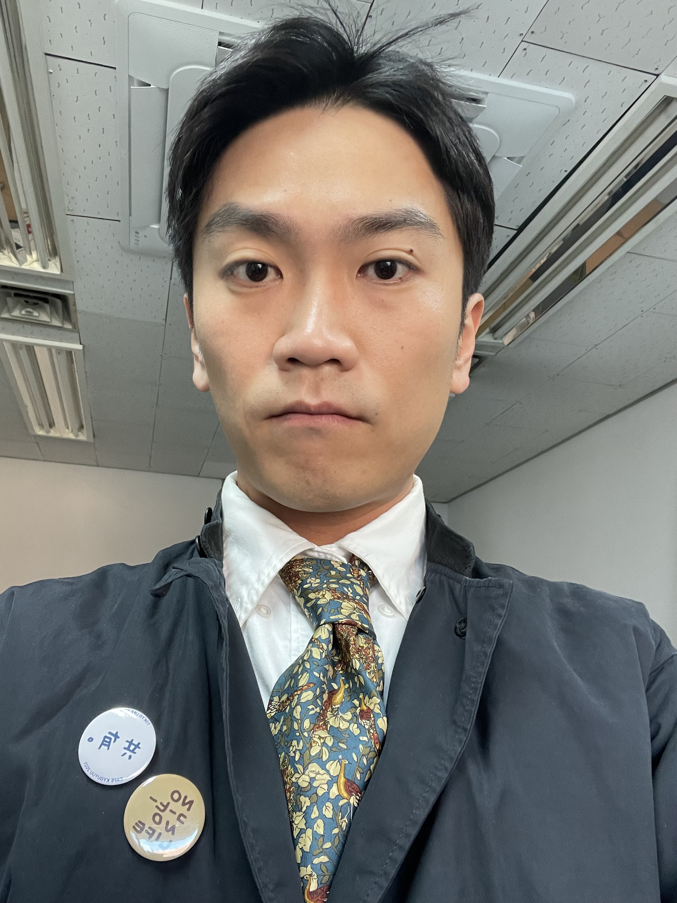

Jaewon Lee

Postdoctorial Instructor (Boss: Lisa Piccirillo)
Department of Mathematics, The University of Texas at Austin
Email: jaewon.lee🐌austin.utexas.edu
Education
Ph.D. in Mathematics, KAIST, 2026 (Boss: JungHwan Park)
Research Interests
Geometric topology in low dimensions like knot concordance and homology cobordism
Papers
-
Every negative amphichiral knot is rationally slice, Alessio Di Prisa, Jaewon Lee, and Oğuz Şavk
Submitted, arXiv: 2509.21140
-
On homology spheres of the trivial local equivalence class, Jaewon Lee and Oğuz Şavk
To appear, Math. Proc. Cambridge Philos. Soc., arXiv: 2508.15384
-
Rational concordance of double twist knots, Jaewon Lee
Submitted, arXiv: 2504.07636
-
Obstructing two-torsion in the rational knot concordance group, Jaewon Lee
Submitted, arXiv: 2406.12761
Talks
-
The 21st East Asian Conference on Geometric Topology, Ewha Womans University, South Korea, Feb 2026
-
Topology Session, 2025 KMS Annual Meeting, ST center, South Korea, Oct 2025
-
Gauge Theory Virtual, zoom, United States, Sep 2025
-
Seminari dei Baby Geometri, Scuola Normale Superiore, Italy, Jun 2025
-
Lightning Talks, Links in Dimensions 3 and 4, ICERM, Brown University, RI, United States, May 2025
-
Séminaire de Topologie, Géométrie et Algèbre, Le Laboratoire de Mathématiques Jean Leray, Nantes Université, France, Mar 2025
-
The 20th East Asian Conference on Geometric Topology, The University of Tokyo, Japan, Feb 2025
-
2025 Mathematics Conference for Undergraduate Students, Sungkyunkwan University, South Korea, Jan 2025
-
Special Session on Low-Dimensional Topology, 2024 KMS Annual Meeting, Sungkyunkwan University, South Korea, Oct 2024
-
The 19th East Asian Conference on Geometric Topology, RIMS, Kyoto University, Japan, Feb 2024
-
Special Session on Geometric Group Theory, 2023 KMS Annual Meeting, Seoul National University, South Korea, Oct 2023
Say Something 👀